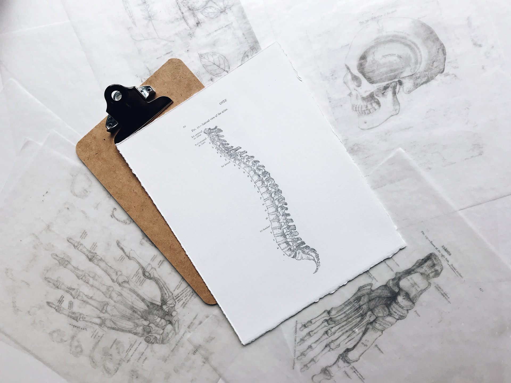

Mitä kiropraktikko hoitaa?
Alta löydät yleisimmät vaivat, joita kiropraktikko hoitaa yleisimmin:
Kiropraktinen koulutus
 Suomessa toimivilla kiropraktikoilla on nimikesuoja, jota valvoo sosiaali- ja terveydenhuollon valvontavirasto Valvira. Nimikkeen käyttö edellyttää ammatinharjoittajalta kansainvälisesti hyväksytyn ylemmän korkeakoulututkinnon suorittamista. Kiropraktista koulusta valvoo sama organisaatio mikä valvoo myös Suomalaisia yliopistoja (The European Association for Quality Assurance in Higher Education). Pohjoismaissa vain Tanskan Odensen lääketieteellisessä tiedekunnassa on kiropraktinen koulutusohjelma. Suomen Kiropraktikkoliitto hyväksyy jäsenikseen vain kansainvälinen tutkinnon suorittaneita ammattilaisia ja järjestää heille pakollista jatkokoulutusta.
Kiropraktikkoja on ollut Suomessa 1920-luvulta saakka, jolloin ensimmäiset kiropraktikot tulivat Yhdysvalloista takaisin kotimaahansa. Jo tuolloin koulutus oli 4 -vuotinen ja täysipäiväistä. Suomessa on vain alle 100 kiropraktikkoa, mikä Pohjoismaista on selvästi vähiten suhteutettuna asukaslukuun. Tanskassa oli jo vuosituhannen alussa 27 tohtoriksi väitellyttä kiropraktikkoa. Näissä maissa kiropraktikoilla on myös huomattavasti laajemmat ammattioikeudet ja -velvollisuudet, kuten oikeus tehdä diagnoosi, antaa sairauslomaa ja lähettää tarvittaessa edelleen kuvantamiseen tai jatkotutkimuksiin muiden terveydenhuollon tarjoajien luokse, jos se palvelee parhaiten potilaan etua. Maissa joissa kiropraktiikka on integroitu terveydenhuoltojärjestelmään, se nähdään hyödyllisenä puuttuneena palasena kansalaisten hyvinvoinnissa. (© Tuomo Ahola)